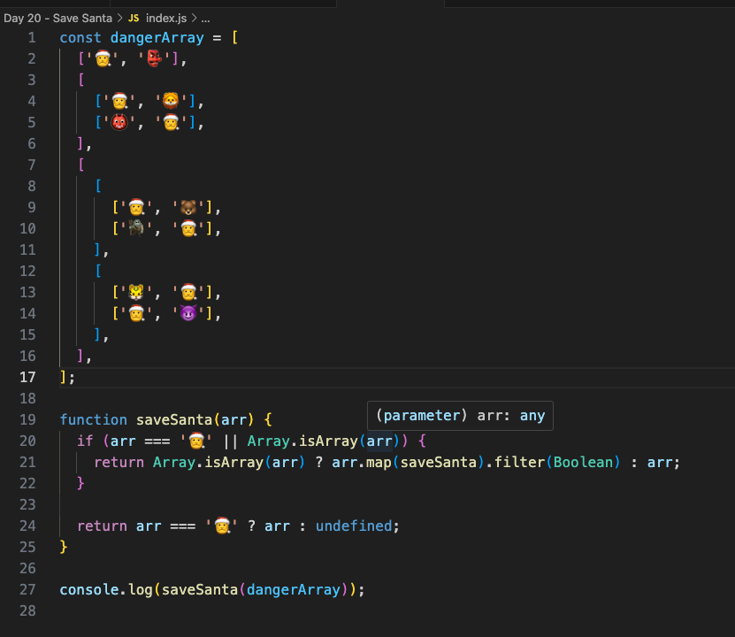
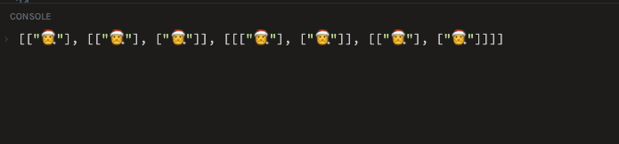

Santas Gift Sorter
"In today's challenge, we had to write a function that loops over a multi-dimensional array and filters out everything that isn't a 🎅 emoji. I chose to tackle the stretch goal and opted not to flatten out the array. This led me to use a recursive function to traverse each array and its nested arrays until the base case was met before moving on to the next top-level array. In the end, we successfully saved Santa!"
In the end.. we successfully saved Santa!
